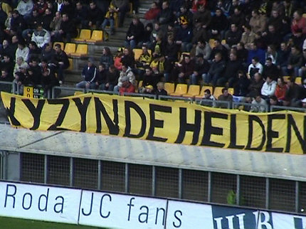

|
Roda JC - Ajax (2-1) 2 april 2006
|
De L1 camera staat klaar voor dit beladen duel.
Femke, voor het eerst in het PLS !

De politie was relaxed deze keer.
Bodycheck voor langharig tuig, sorry Siem ;-)
Omdat vele FP-gasten een stadionverbod hadden namen enkele WSU-lui de
moeite om te collecteren voor de proceskosten. Hulde!
Onterecht dus... rehabilitatie!
Het PLS hing vol met protestteksten tegen het schandalige optreden van
de Amsterdamse politie bij de halve bekerfinalewedstrijd Ajax-Roda JC.
De HaneBretBoys zijn geen hools !
Tijdens de warming-up droegen de spelers shirts met de opdruk "Wij
steunen onze echte Roda-supporters".
Z16 was door de stadionverboden flink gemillimeterd maar deze sfeermaker
was er nog bij.
Een kleine vijftig man op zuid deden mee aan de 10-minuten actie.

De fans uit Helden zijn verhuisd naar oost......?
Duidelijke taal op west.
Marco is naar de kapper geweest, Pjotr heeft geen geld voor scheermesjes
en Danniëlle vindt er niks aan als Ivan niet meespeelt.
Slecht verdedigend werk zorgt er voor dat Huntelaar vrijwel ongehinderd in
kan koppen: 0-1, (18).
Vreugde bij de verliezers van de aanstaande bekerfinale.
Steun voor de fans uit Vaals.
Lindenbergh maakt een eigen doelpunt: danke-bitte, 1-1, (27').
Het stadion zat aardig vol.
Luinge trok geel voor Bodor, Senden en Cristiano.
Het kan niet altijd kermis zijn voor 020. De 1 min. extra speeltijd is al ruim
voorbij als drie Ajacieden kunnen uitbreken, maar als Luinge dan affluit
zijn er enorme protesten van de Amsterdammers.
Zelfs trainer Blind komt er zich mee bemoeien en mag daardoor de tweede
helft vanaf de tribune toezien.
In de 76e min. krijgt Juanfran de rode kaart.
Invaller Sonko scoort in de 89e minuut de bevrijdende 2-1.
De revanche is compleet!
Het AFCA-gespuis met hun provocerende teksten valt stil.
Roda bedank!

Gedurende de wedstrijd hing het KOEMPELS doek op "zwart". (foto:ASP)
De spelers die de Kickoff bezochten waren Vicelich, Cissé, Castro, Rudge
en Senden.
Cissé met Ibrahim, het zoontje van Sonko.

Er zijn veel foto's gemaakt in de Kickoff. Morgen volgt daar een collage van.
© Koempels Pleasure Dome
|